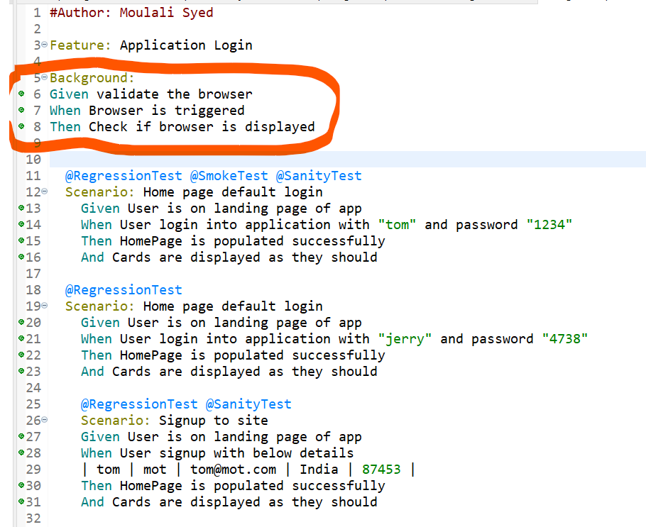
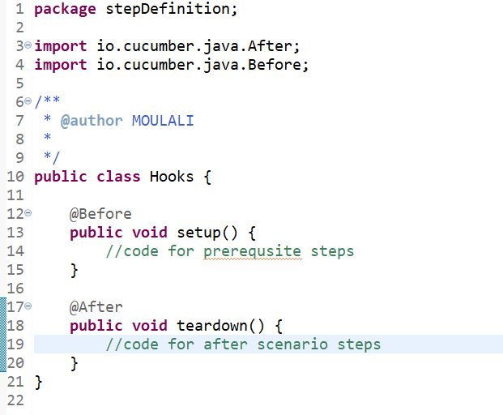
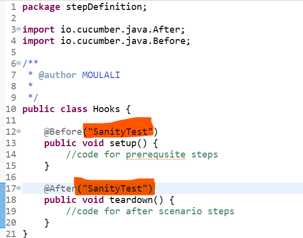

Importance of Background keyword
If we want to run any prerequsite step which is common to all the Scenario in a particular feature file we can define it using Background
Background is specific to feature file in which it is defined , other feature files doesnot consider it as prerequsite
Usage of Hooks
If we have different prerequsite for each Scenario inside a single feature file then we can use hooks
Create a class Hooks.java
Before will run before every scenario , in real time we can control this using the tagName
